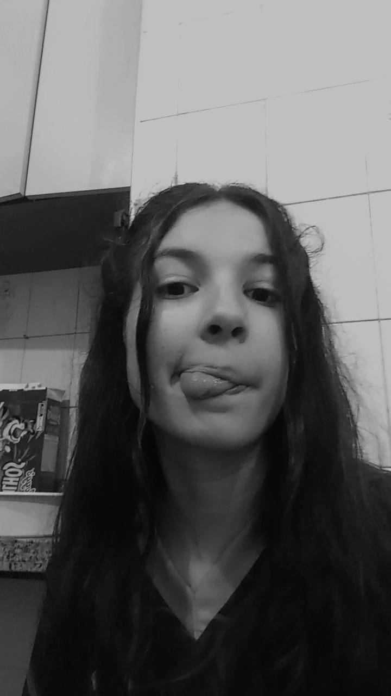

Olá! Meu nome é Lívia Pellegrini, tenho 17 anos e sou uma estudante do colegio ibrahim nobre. sou apaixonada por criatividade, aprendizado e novas experiências. Atualmente, estou desenvolvendo este portfólio como parte de um trabalho escolar, mas vejo nele uma oportunidade incrível de reunir tudo o que sou e o que venho construindo ao longo da minha jornada acadêmica e pessoal. Gosto de me envolver com projetos que desafiam meu olhar crítico, minha organização e minha expressão — seja através da escrita, do design ou da comunicação. Sou curiosa por natureza e sempre busco entender como as coisas funcionam, além de gostar de colaborar em equipe e aprender com outras pessoas. Ainda estou descobrindo o que quero seguir no futuro, mas já sei que quero estar em um caminho onde eu possa unir sensibilidade, responsabilidade e inovação. Este portfólio é um reflexo do meu momento atual: cheio de descobertas, tentativas, sonhos e dedicação. Seja bem-vindo(a) a conhecer um pouco mais sobre mim e meu trabalho!
Esse projeto foi desenvolvido no p5js, esse projeto teve como objetivo a construção de um rosto/ Monalisa que mexesse os olhos é tivesse cores divertidas.
Ver ProjetoEsse projeto foi feito no p5js, esse projeto é um jogo de corrida com emojis, os emojis foram copiados no piliapp, e cada um dele foi programado por letras para correr, ou seja cada emoji se movimenta com a sua letra programada.
Ver Projeto